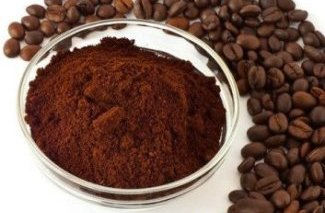

A cappuccino is an espresso-based coffee drink that originated in Italy, and is traditionally prepared with double espresso, and steamed milk foam.

ESPRESSO $14.00
Espresso is coffee brewed by expressing or forcing a small amount of nearly boiling water under pressure through finely ground coffee beans.
AMERICANO $14.00
Caffè Americano or Americano is a type of coffee drink prepared by diluting an espresso with hot water.
BLACK COFFEE $14.00
Black Coffee, it is a coffee recipe which does not involve any amount of milk or cream. In short, it does not mix any dairy substitute during the processing.
CAFÉ LATTE $14.00
A latte is a coffee drink made with espresso and steamed milk.
TURKISH COFFEE $14.00
Turkish coffee is a method of preparing very finely ground unfiltered coffee. The same method is used in many Middle Eastern and Southeastern European countries.
FLAT WHITE $14.00
A flat white is an espresso-based coffee drink consisting of espresso with microfoam (steamed milk with small, fine bubbles with a glossy or velvety consistency).
CAFÉ MOCHA $14.00
A caffè mocha, also called mocaccino, is a chocolate-flavored variant of a caffè latte.
IRISH COFFEE $14.00
Irish coffee is a cocktail consisting of hot coffee, Irish whiskey, and sugar stirred, and topped with thick cream.